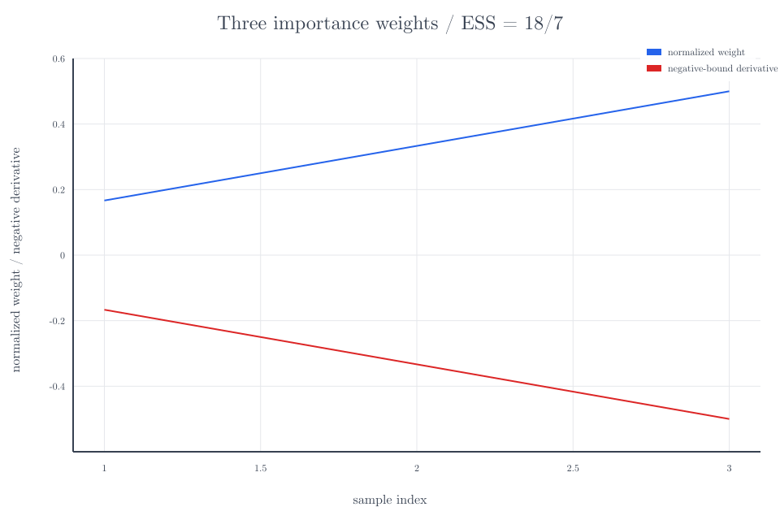
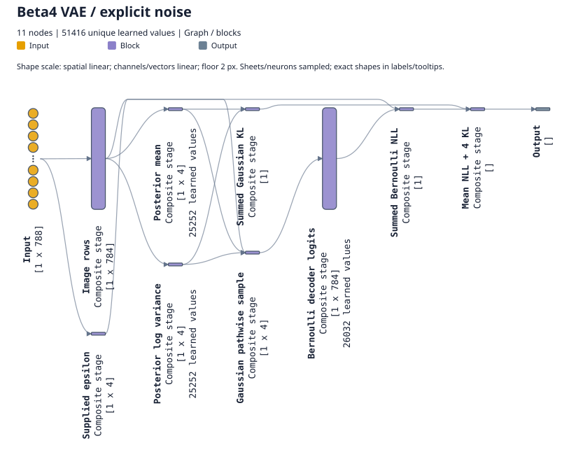
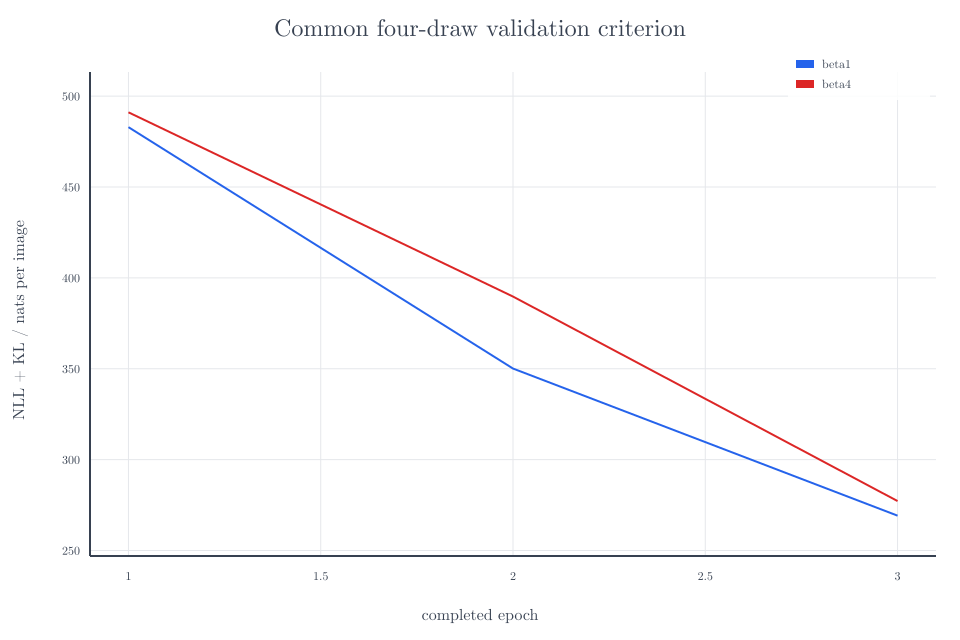
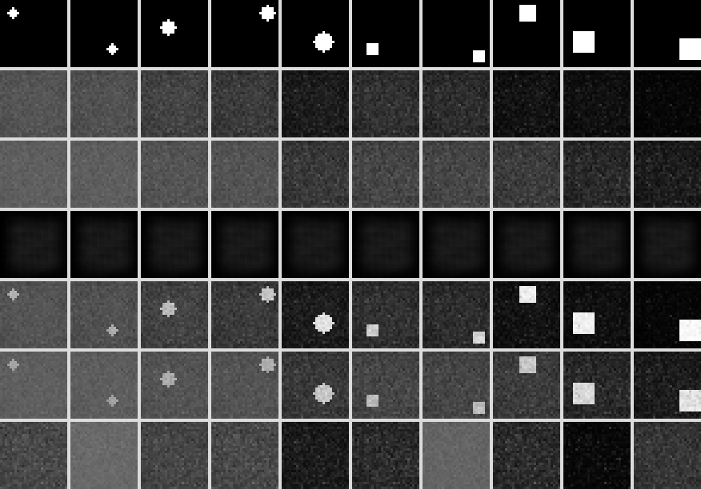
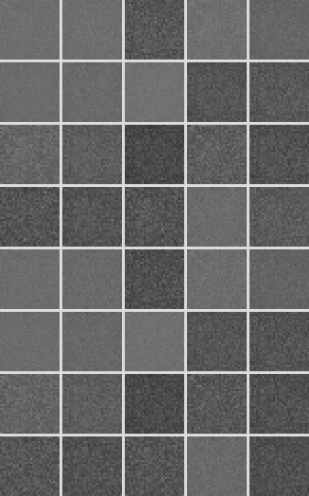
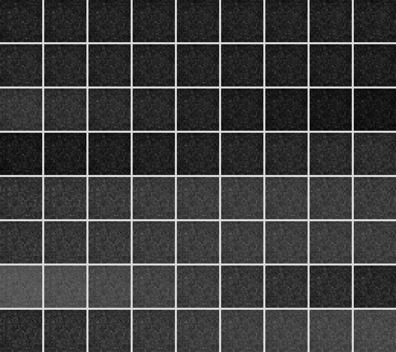

Beta-VAE: Explicit Gaussian Noise and a Common Validation Criterion
Abstract
A variational autoencoder maps images to uncertain latent codes and decodes their samples into pixel probabilities. Balancing reconstruction against the prior changes both the learned codes and the decoded images. This report derives the diagonal-Gaussian pathwise estimator and runs matched beta1/beta4 models on294 unique binary circle/square images. Both use identical initial weights, minibatch order and explicit noise banks; a common four-draw validation negative ELBO selects each checkpoint. After only21 updates per model, beta4 has lower test KL but worse reconstruction; decode(mu) MSE is0.07514/0.09722 versus0.04855 for the fitting-only mean. Unfiltered examples, prior probabilities, latent traversals and fitting-only factor probes expose these limitations. Higher beta alone does not establish disentanglement.
A Gaussian posterior and a Bernoulli decoder
[Kingma and Welling's Auto-Encoding Variational Bayes](https://arxiv.org/abs/1312.6114) turns latent sampling into a differentiable transformation of explicit noise. For image x, the encoder predicts mu(x) and log variance l(x), with q(z|x)=N(mu,diag(exp(l))). Supply epsilon~N(0,I), independent of parameters, and set z=mu+exp(l/2)⊙epsilon. The decoder produces logits a(z), then sigmoid probabilities p. The reconstructed probabilities are neither sampled binary pixels nor the marginal likelihood.
[Higgins et al.'s beta-VAE](https://openreview.net/forum?id=Sy2fzU9gl) weights the KL penalty. This small teaching architecture uses784→32ReLU→two4-coordinate linear heads and 4→32ReLU→784linear logits, with ordinary Glorot-uniform weights and zero biases. For one explicit draw per image its objective is
Jensen's inequality gives log p(x)≥E_qlog p(x−KL(q||p), so beta1 estimates the negative ELBO. For beta>1, L_beta=negativeELBO+(beta−1)KL in expectation: it penalizes information in the posterior more strongly, without promising useful or axis-aligned factors. No capacity annealing is used. All reductions matter: averaging pixels but summing latent coordinates would change the effective regularization by784. Decode(mu) is a deterministic control and generally differs from E_q[decode(z)] because the decoder is nonlinear.
#include <dm/dm.hpp>
int main() {
std::filesystem::create_directories("build");
dm::graphics::Diagram d(55, 1150);
dm::graphics::DiagramNodeStyle loss_style;
loss_style.width = 4.4;
loss_style.height = 3.2;
dm::graphics::DiagramStroke target;
target.arrow = true;
target.dashed = true;
d.node("x", {0, 0}, "Binary image X\n784 pixels")
.node("q", {6, 0}, "Encoder + Gaussian heads\nmu and log variance: four each")
.node("e", {0, -4}, "Explicit epsilon ~ N(0,I)\nFixed banks / fresh training banks")
.node("z", {6, -4}, "Pathwise sample\nz = mu + exp(l/2) * epsilon")
.node("g", {12, -4}, "Bernoulli decoder\n4 →32 ReLU →784 logits")
.node("kl", {12, 0}, "Analytic KL to N(0,I)\nSummed over four coordinates")
.node(
"loss",
{18, -4},
"Image X as target\nTrain: NLL + beta KL\nSelect: common NLL + KL",
loss_style)
.edge("x", "q")
.edge("q", "z")
.edge("e", "z")
.edge("z", "g")
.edge("q", "kl")
.edge("g", "loss")
.edge("kl", "loss")
.path({{0, .6}, {0, 3}, {18, 3}, {18, -2.4}}, target)
.save_svg("build/beta_method.svg");
}
Hand values and pathwise derivatives
For mu=[.2,−.4], l=[0,log4] and epsilon=[1,−.5], z=[1.2,−1.4]. KL=0.5(.04+.16+4−1−log4)≈0.90685. At mu=0,l=0 the KL is exactly zero. To isolate the pathwise derivatives, use the small surrogate J=mean_b(0.5∑_d z_bd²+4K_b), rather than a learned decoder. Then ∂J/∂mu=(z+4mu)/B, ∂J/∂l=(0.5z sigma epsilon+2(exp(l)−1))/B and ∂J/∂epsilon=z sigma/B, with sigma=exp(l/2). The executed check covers both rows, all four sample values, two KLs and all twelve derivatives. The Bernoulli term at logits [100,−100,100,−100] with targets[1,0,0,1] is200 without probability clipping.
#include <dm/dm.hpp>
void Near(double a, double b, double tolerance, const std::string& label) {
if (std::abs(a - b) > tolerance)
throw std::runtime_error(label);
}
int main() {
namespace nn = dm::nn;
const double beta = 4;
const std::vector<float> m{.2f, -.4f, .1f, .3f},
l{0.f, float(std::log(4.)), float(std::log(.25)), .2f}, e{1.f, -.5f, 2.f, -1.f};
auto mu = nn::from_vector(m, {2, 2}).requires_grad_(),
lv = nn::from_vector(l, {2, 2}).requires_grad_(),
eps = nn::from_vector(e, {2, 2}).requires_grad_();
auto z = nn::models::GaussianReparameterize(mu, lv, eps),
kl = nn::models::DiagonalGaussianKl(mu, lv);
auto loss = nn::mean(0.5 * nn::sum(nn::square(z), {1}) + beta * kl, {0});
auto grad = nn::grad(loss, {mu, lv, eps});
auto extreme = nn::models::BernoulliPixelNll(
nn::tensor({{100., -100., 100., -100.}}), nn::tensor({{1., 0., 0., 1.}}));
auto zero_kl = nn::models::DiagonalGaussianKl(nn::zeros({1, 2}), nn::zeros({1, 2}));
const auto zs = z.to_vector<float>(), kls = kl.to_vector<float>(),
g0 = grad[0].to_vector<float>(), g1 = grad[1].to_vector<float>(),
g2 = grad[2].to_vector<float>();
for (int b = 0; b < 2; ++b) {
double k = 0;
for (int j = 0; j < 2; ++j) {
const int i = b * 2 + j;
const double mean = m[i], logv = l[i], noise = e[i], sigma = std::exp(.5 * logv),
value = mean + sigma * noise;
k += .5 * (mean * mean + std::exp(logv) - 1 - logv);
Near(zs[i], value, 2e-7, "all4reparameterized values");
Near(g0[i], (value + beta * mean) / 2, 2e-7, "all4mu derivatives include pathwise PLUS KL");
Near(
g1[i],
(.5 * value * sigma * noise + .5 * beta * (std::exp(logv) - 1)) / 2,
3e-7,
"all4logvariance derivatives include pathwise PLUS KL");
Near(g2[i], value * sigma / 2, 3e-7, "all4epsilon derivatives follow sigma");
}
Near(kls[b], k, 2e-7, "all2analytic Gaussian KLs");
}
Near(extreme.at({0}), 200, 1e-6, "stable BCE for logits+-100");
Near(zero_kl.at({0}), 0, 0, "q=N(0,I)KL exactly0");
std::vector<double> sample(zs.begin(), zs.end()), index{0, 1, 2, 3};
auto chart = dm::graphics::RPlot::create();
chart.points(index, sample, "explicit sample", {37, 99, 235}, 6)
.title("Explicit Gaussian pathwise sample")
.x_label("coordinate")
.y_label("z");
chart.save_svg("build/beta_pathwise.svg");
std::print("All4 samples,2 KLs,12 derivatives,zero KL and extreme Bernoulli NLL passed.\n");
}All4 samples,2 KLs,12 derivatives,zero KL and extreme Bernoulli NLL passed.

Executed architecture and parameter census
The shape probe packs784 image entries and four epsilon entries into a single788-entry input, then explicitly splits them into independent branches. This packing is for Module tracing only; the public model takes image and epsilon separately. The Gaussian sample stage names both posterior heads and epsilon. Ten leaves hold51,416 scalars: encoder25,120; mu132; log-variance132; decoder160; output25,872. All parameter gradients remain visible.
#include <dm/dm.hpp>
int main() {
namespace n = dm::nn;
n::ParameterStore p(2237);
n::Module model(
[&](const n::Tensor& packed) {
auto x = n::slice_axis(packed, 1, 0, 784), e = n::slice_axis(packed, 1, 784, 788);
n::model_stage("Image rows", packed, x);
n::model_stage("Supplied epsilon", packed, e);
auto o = n::models::BetaVariationalAutoencoder(p, x, e, 4);
n::model_stage("Posterior mean", x, o.mu);
n::model_stage("Posterior log variance", x, o.log_variance);
n::model_stage(
"Gaussian pathwise sample", std::vector<n::Tensor>{o.mu, o.log_variance, e}, o.z);
n::model_stage("Bernoulli decoder logits", o.z, o.logits);
n::model_stage(
"Summed Bernoulli NLL", std::vector<n::Tensor>{x, o.logits}, o.reconstruction_nll);
n::model_stage("Summed Gaussian KL", std::vector<n::Tensor>{o.mu, o.log_variance}, o.kl);
n::model_stage(
"Mean NLL + 4 KL", std::vector<n::Tensor>{o.reconstruction_nll, o.kl}, o.loss);
return o.loss;
},
"Beta4 VAE / explicit noise");
n::ModelPlotOptions o;
o.style = n::ModelPlotStyle::Graph;
o.detail = n::ModelPlotDetail::Blocks;
o.max_neurons = 8;
o.sizing.spatial_scale = n::ModelPlotScale::Linear;
o.sizing.channel_scale = n::ModelPlotScale::Linear;
o.sizing.minimum_extent = 2;
o.sizing.max_planes = 6;
auto figure = model.plot(n::zeros({1, 788}), o);
if (p.size() != 10 || p.count() != 51416 || figure.parameter_count() != 51416)
return 1;
figure.save_svg("build/beta_architecture.svg");
std::print("10 leaves / {} scalars; explicit image and epsilon branches.\n", p.count());
}10 leaves / 51416 scalars; explicit image and epsilon branches.

An exhaustive known-factor lattice
The local procedural fixture exhausts2 shapes(circle/square)×3 sizes×7 x positions×7 y positions=294 unique binary28×28 images. Radius=size+2, center=(3x+5,3y+5); circles use inclusive Euclidean radius, squares inclusive Chebyshev radius. Source ID is (((shape×3+size)×7+x)×7+y). Residue(x+2y+size+3shape) mod7 assigns test0, validation1 and fit2–6:210/42/42 disjoint combinations, each factor marginal balanced. The native preparation API preserves the source's data exactly. This is a tiny teaching lattice, not MNIST/dSprites, an IID split or a disentanglement benchmark. Factors never enter the VAE or checkpoint selection. Preparation is offline and records provenance in the shared data cache.
#include <dm/dm.hpp>
int main() {
namespace n = dm::nn;
std::filesystem::create_directories("build/beta_vae");
const std::filesystem::path cache = dm::datasets::data_home();
dm::datasets::prepare_example_data("beta-vae-assets", cache.string());
auto arrays = n::load_npz((cache / "beta_vae/factors.npz").string());
std::set<int> ids;
std::set<std::vector<int>> images;
for (auto& [name, value] : arrays) {
if (name.ends_with("_images")) {
for (int b = 0; b < value.size(0); ++b) {
auto row = n::select(value, 0, b).to_vector<int>();
if (!images.insert(row).second)
return 1;
}
value = n::cast(value, n::DType::Float32);
}
if (name.ends_with("_source_ids"))
for (int id : value.to_vector<int>())
if (!ids.insert(id).second)
return 1;
}
if (ids.size() != 294 || images.size() != 294)
return 1;
n::save_npz("build/beta_vae/data.npz", arrays);
std::filesystem::copy_file(
cache / "beta_vae/manifest.json",
"build/beta_vae/data_manifest.json",
std::filesystem::copy_options::overwrite_existing);
std::print(
"| split | images | features |\n|---|---:|---:|\n| fit |210|784|\n| validation |42|784|\n| "
"test |42|784|\n");
}| split | images | features |
|---|---|---|
| fit | 210 | 784 |
| validation | 42 | 784 |
| test | 42 | 784 |
Paired fitting with common validation selection
Both models start from the same seed2237 parameter arrays, not merely similarly distributed weights. Training uses one fresh epsilon per fitting image per epoch, seeds2252/2253/2254; validation and test retain four fixed draws (fit2273, validation2267, test2269). The same banks are shared across betas. The core GaussianNoise stream uses explicit MT19937/Box–Muller Float64 draws, narrowed to Float32; both versions are saved. Prior codes use seed2281.
Three epochs of BatchOrder(210,32,2243) give seven updates per epoch, including a final 18-image batch:21 updates/model. Adam uses learning rate.003, moments.9/.999 and epsilon1e-8, with separate optimizer state per model. Each batch rebuilds its forward graph, explicitly computes gradients and updates the ten leaves. The full first gradient and parameter snapshots are saved. One weighted loss is used for training. Checkpoint selection instead uses the same four-draw *unweighted* validation NLL+KL for both models. Comparing their weighted losses would compare different criteria. Completed epochs1–3 are eligible; epoch zero is not. Monte Carlo NLL is accumulated sample then image in Float64 from Float32 per-image values; KL is analytic and counted once per image. Test pixels/factors never select an epoch.
#include <dm/dm.hpp>
namespace nn = dm::nn;
void Require(bool condition, const std::string& why) {
if (!condition)
throw std::runtime_error(why);
}
void Near(double x, double y, double tolerance, const std::string& why) {
Require(std::abs(x - y) <= tolerance, why);
}
struct BetaFactorData {
nn::Tensor images, factors, source;
};
struct VaeNoiseBank {
nn::Tensor standard, epsilon;
};
nn::Tensor Flatten(const nn::Tensor& t) {
return nn::reshape(t, {t.size(0), 784});
}
nn::Tensor Find(const nn::NamedTensors& a, const std::string& key) {
for (const auto& [k, v] : a)
if (k == key)
return v;
throw std::runtime_error(key);
}
std::vector<float> Bytes(const nn::Tensor& t) {
return t.contiguous().to_vector<float>();
}
nn::NamedTensors Arrays(const nn::ParameterStore& p) {
nn::NamedTensors a;
for (const auto& k : p.names())
a.emplace_back(k, p.at(k).detach().clone());
return a;
}
auto Snapshot(const nn::ParameterStore& p) {
return p.flatten();
}
nn::NamedTensors CheckGradients(
const nn::ParameterStore& p,
const std::vector<nn::Tensor>& gs,
const std::string&,
const std::string&) {
nn::NamedTensors a;
Require(gs.size() == p.size(), "all10 gradients");
const auto names = p.names();
for (std::size_t i = 0; i < gs.size(); ++i) {
double norm = 0;
for (double x : gs[i].to_vector<double>()) {
Require(std::isfinite(x), "finite derivatives");
norm += x * x;
}
Require(norm > 0, "nonzero derivative in each tensor");
a.emplace_back(names[i], gs[i]);
}
return a;
}
VaeNoiseBank BetaVaeNoise(std::int64_t n, std::int64_t samples, std::uint32_t seed) {
const auto standard = nn::models::GaussianNoise({n, 4}, samples, seed);
return {standard, nn::cast(standard, nn::DType::Float32)};
}
nn::Tensor BetaVaeNoiseAt(const VaeNoiseBank& bank, int k) {
return nn::select(bank.epsilon, 0, k).contiguous();
}
std::vector<nn::Tensor>
Evaluate(nn::ParameterStore& p, float beta, const nn::Tensor& images, const nn::Tensor& epsilon) {
nn::NoGradGuard guard;
const auto o = nn::models::BetaVariationalAutoencoder(p, Flatten(images), epsilon, beta);
return {o.mu, o.log_variance, o.z, o.probability, o.reconstruction_nll, o.kl, o.loss};
}
nn::Tensor Decode(nn::ParameterStore& p, const nn::Tensor& z) {
nn::NoGradGuard guard;
return nn::sigmoid(nn::models::GaussianVaeDecode(p, z));
}
std::array<double, 4> BetaVaeScore(
nn::ParameterStore& p,
const nn::Tensor& images,
const VaeNoiseBank& bank,
float beta) {
double reconstruction = 0, kl = 0;
const auto n = images.size(0), samples = bank.epsilon.size(0);
for (int k = 0; k < samples; ++k) {
const auto o = Evaluate(p, beta, images, BetaVaeNoiseAt(bank, k));
const auto nll = o[4].to_vector<float>(), kls = o[5].to_vector<float>();
for (int b = 0; b < n; ++b) {
reconstruction += nll[b];
if (k == 0)
kl += kls[b];
}
}
reconstruction /= double(n * samples);
kl /= double(n);
return {reconstruction, kl, reconstruction + kl, reconstruction + beta * kl};
}
double MaxAbsDiff(const nn::Tensor& a, const nn::Tensor& b, int n) {
const auto x = Bytes(a), y = Bytes(b);
double d = 0;
for (int i = 0; i < n; ++i)
d = std::max(d, std::abs(double(x[i]) - y[i]));
return d;
}
double Mse(const nn::Tensor& a, const nn::Tensor& b) {
return nn::mean(
nn::square(
nn::cast(Flatten(a), nn::DType::Float64) -
nn::cast(Flatten(b), nn::DType::Float64)))
.item();
}
double Train(
float beta,
const std::vector<BetaFactorData>& pools,
const std::vector<VaeNoiseBank>& train_noise,
const std::vector<VaeNoiseBank>& eval_noise,
const VaeNoiseBank& prior_noise,
int epochs,
const std::filesystem::path& root,
const nn::NamedTensors& initial) {
const auto directory = root / (beta == 1 ? "beta1" : "beta4");
std::filesystem::create_directories(directory);
nn::ParameterStore model(2237);
for (const auto& [name, value] : initial)
model.set(name, value.clone());
nn::OptimizerConfig config;
config.kind = nn::OptimizerKind::Adam;
nn::Optimizer optimizer(model, .003, config);
Require(model.size() == 10 && model.count() == 51416, "compact four-dimensional betaVAE census");
nn::save_npz((directory / "initial_arrays.npz").string(), Arrays(model));
auto initial_score = BetaVaeScore(model, pools[2].images, eval_noise[2], beta);
nn::BatchOrder order(210, 32, 2243);
std::ofstream history(directory / "history.tsv"), batches(directory / "batches.tsv");
history.precision(17);
history << "epoch\tfit_preupdate_weighted_objective\tvalidation_nll\tvalidation_kl\tvalidation_"
"negative_elbo\t"
"validation_weighted_objective\n";
batches << "epoch\tstep\trow\tsource_id\n";
const auto fit_source = pools[0].source.to_vector<int>();
const auto best_path = (directory / "best.npz").string();
double best = std::numeric_limits<double>::infinity();
int selected = 0, step = 0;
const auto started = std::chrono::steady_clock::now();
for (int epoch = 1; epoch <= epochs; ++epoch) {
auto epsilon = BetaVaeNoiseAt(train_noise[epoch - 1], 0);
order.begin_epoch();
double sum = 0;
int seen = 0;
for (;;) {
auto rows = order.next();
if (rows.empty())
break;
auto input = nn::take_rows(pools[0].images, rows), e = nn::take_rows(epsilon, rows);
if (step == 0) {
auto g = CheckGradients(
model,
nn::grad(
nn::models::BetaVariationalAutoencoder(model, Flatten(input), e, beta).loss,
model.parameters()),
"all beta-weighted derivatives finite",
"all10posterior/decoder tensors receive gradients");
nn::save_npz((directory / "first_gradients.npz").string(), g);
nn::save_npz((directory / "first_batch.npz").string(), {{"images", input}, {"epsilon", e}});
}
const auto out = nn::models::BetaVariationalAutoencoder(model, Flatten(input), e, beta);
sum += double(rows.size()) * out.loss.item<float>();
const auto gradients = nn::grad(out.loss, model.parameters());
optimizer.step(gradients);
seen += int(rows.size());
for (auto row : rows)
batches << epoch << '\t' << step << '\t' << row << '\t' << fit_source[row] << '\n';
if (step == 0)
nn::save_npz((directory / "first_update_arrays.npz").string(), Arrays(model));
++step;
}
Require(seen == 210, "all210fitting images once per epoch");
auto score = BetaVaeScore(model, pools[1].images, eval_noise[1], beta);
history << epoch << '\t' << sum / seen << '\t' << score[0] << '\t' << score[1] << '\t'
<< score[2] << '\t' << score[3] << '\n';
nn::save_npz(
(directory / ("epoch" + std::to_string(epoch) + "_arrays.npz")).string(), Arrays(model));
if (score[2] < best) {
best = score[2];
selected = epoch;
model.save(best_path); // COMMON unweighted 4-sample validation negative ELBO selects
}
std::cout << "beta" << beta << " epoch" << epoch << ":NLL=" << score[0] << ",KL=" << score[1]
<< ",commonnegativeELBO=" << score[2] << ",weightedobjective=" << score[3]
<< std::endl;
}
const double seconds =
std::chrono::duration<double>(std::chrono::steady_clock::now() - started).count();
nn::ParameterStore deployed(2237);
{
nn::NoGradGuard guard;
nn::models::BetaVariationalAutoencoder(deployed, nn::zeros({1, 784}), nn::zeros({1, 4}), beta);
}
deployed.load(best_path); // fresh betaVAE inference restore
const auto before = Snapshot(deployed);
Near(
BetaVaeScore(deployed, pools[1].images, eval_noise[1], beta)[2],
best,
1e-8,
"fresh common selected validation score");
nn::NamedTensors output;
for (int split = 0; split < 3; ++split) {
const std::string name = split == 0 ? "fit" : split == 1 ? "validation" : "test";
const std::int64_t n = pools[split].images.size(0);
auto mean = Evaluate(deployed, beta, pools[split].images, nn::zeros({n, 4}));
Require(Bytes(mean[2]) == Bytes(mean[0]), "epsilon0 yields EXACT posterior mean");
std::vector<nn::Tensor> zs, prob, nll;
for (int k = 0; k < 4; ++k) {
auto draw =
Evaluate(deployed, beta, pools[split].images, BetaVaeNoiseAt(eval_noise[split], k));
Require(
Bytes(draw[0]) == Bytes(mean[0]) && Bytes(draw[1]) == Bytes(mean[1]),
"noise changes samples,not posterior parameters");
zs.push_back(draw[2]);
prob.push_back(draw[3]);
nll.push_back(draw[4]);
}
output.emplace_back(name + "_mu", mean[0]);
output.emplace_back(name + "_log_variance", mean[1]);
output.emplace_back(name + "_mean_prediction", mean[3]);
output.emplace_back(name + "_kl", mean[5]);
output.emplace_back(name + "_sample_z", nn::stack(zs, 0));
output.emplace_back(name + "_sample_prediction", nn::stack(prob, 0));
output.emplace_back(name + "_sample_nll", nn::stack(nll, 0));
}
auto test = Evaluate(deployed, beta, pools[2].images, BetaVaeNoiseAt(eval_noise[2], 0)),
repeat = Evaluate(deployed, beta, pools[2].images, BetaVaeNoiseAt(eval_noise[2], 0));
Require(
Bytes(test[2]) == Bytes(repeat[2]) && Bytes(test[3]) == Bytes(repeat[3]) &&
Bytes(Decode(deployed, test[2])) == Bytes(test[3]),
"fixednoise repeat and exact targetfree sampled decode");
auto other = Evaluate(deployed, beta, pools[2].images, BetaVaeNoiseAt(eval_noise[2], 1));
Require(
Bytes(test[2]) != Bytes(other[2]) && Bytes(test[3]) != Bytes(other[3]),
"changed epsilon changes sample AND probability");
auto single = Evaluate(
deployed,
beta,
nn::take_rows(pools[2].images, {0}),
nn::take_rows(BetaVaeNoiseAt(eval_noise[2], 0), {0}));
const double parity = MaxAbsDiff(single[3], test[3], 784);
Require(parity < 2e-6, "betaVAE single/batch parity");
output.emplace_back("zero_prediction", Decode(deployed, nn::zeros({42, 4})));
auto prior_z = BetaVaeNoiseAt(prior_noise, 0), prior = Decode(deployed, prior_z);
const auto fit_mu = Find(output, "fit_mu").to_vector<float>();
std::vector<float> center(4), traversal(36 * 4);
for (int d = 0; d < 4; ++d) {
double sum = 0;
for (int b = 0; b < 210; ++b)
sum += fit_mu[b * 4 + d];
center[d] = float(sum / 210);
}
for (int d = 0; d < 4; ++d)
for (int k = 0; k < 9; ++k)
for (int j = 0; j < 4; ++j)
traversal[(d * 9 + k) * 4 + j] = center[j] + (j == d ? -2.f + .5f * k : 0);
auto traversal_z = nn::from_vector(traversal, {36, 4}),
traversal_p = Decode(deployed, traversal_z);
nn::save_npz(
(directory / "prior.npz").string(),
{{"z", prior_z},
{"probability", prior},
{"traversal_center", nn::from_vector(center, {4})},
{"traversal_z", traversal_z},
{"traversal_probability", traversal_p}});
auto diagnostics = nn::models::LatentFactorDiagnostics(
Find(output, "fit_mu"),
Find(output, "test_mu"),
pools[0].factors,
pools[2].factors,
Find(output, "fit_log_variance"));
nn::save_npz((directory / "factor_probes.npz").string(), diagnostics);
Require(
before == Snapshot(deployed),
"prior/traversal/factor diagnostics leave all10model tensors immutable");
nn::save_npz((directory / "outputs.npz").string(), output);
nn::save_npz((directory / "model_arrays.npz").string(), Arrays(deployed));
auto score = BetaVaeScore(deployed, pools[2].images, eval_noise[2], beta);
const double mse = Mse(Find(output, "test_mean_prediction"), pools[2].images);
std::print(
"| beta{} | {} | {:.9f} | {:.9f} | {:.9f} | {:.9f} | {:.9f} |\n",
beta,
selected,
score[0],
score[1],
score[2],
score[3],
mse);
return seconds;
}
int main() {
const std::filesystem::path root = "build/beta_vae";
const int epochs = 3;
const auto data = nn::load_npz((root / "data.npz").string());
std::vector<BetaFactorData> pools;
for (const std::string split : {"fit", "validation", "test"})
pools.push_back(
{Find(data, split + "_images"),
Find(data, split + "_factors"),
Find(data, split + "_source_ids")});
std::print(
"| model | selected epoch | test NLL | test KL | common NLL+KL | weighted NLL+beta KL | "
"decode(mu) MSE |\n|---|---:|---:|---:|---:|---:|---:|\n");
std::vector<VaeNoiseBank> train_noise,
eval_noise{BetaVaeNoise(210, 4, 2273), BetaVaeNoise(42, 4, 2267), BetaVaeNoise(42, 4, 2269)};
auto prior_noise = BetaVaeNoise(20, 1, 2281);
nn::NamedTensors noise_arrays{
{"prior_standard", prior_noise.standard}, {"prior_epsilon", prior_noise.epsilon}};
for (int split = 0; split < 3; ++split) {
const std::string name = split == 0 ? "fit" : split == 1 ? "validation" : "test";
noise_arrays.emplace_back(name + "_standard", eval_noise[split].standard);
noise_arrays.emplace_back(name + "_epsilon", eval_noise[split].epsilon);
}
nn::save_npz((root / "fixed_noise.npz").string(), noise_arrays);
for (int epoch = 1; epoch <= epochs; ++epoch) {
train_noise.push_back(BetaVaeNoise(210, 1, 2251 + epoch));
nn::save_npz(
(root / ("train_noise_epoch" + std::to_string(epoch) + ".npz")).string(),
{{"standard", train_noise.back().standard}, {"epsilon", train_noise.back().epsilon}});
}
nn::ParameterStore first(2237), second(2237);
{
nn::NoGradGuard guard;
nn::models::BetaVariationalAutoencoder(first, nn::zeros({1, 784}), nn::zeros({1, 4}), 1);
}
auto initial = Arrays(first);
for (const auto& [name, value] : initial)
second.set(name, value.clone());
const std::vector<std::int64_t> eight{0, 1, 2, 3, 4, 5, 6, 7};
auto images = nn::take_rows(pools[0].images, eight),
epsilon = nn::take_rows(BetaVaeNoiseAt(eval_noise[0], 0), eight);
auto a = Evaluate(first, 1, images, epsilon), b = Evaluate(second, 4, images, epsilon);
for (int i = 0; i < 6; ++i)
Require(
Bytes(a[i]) == Bytes(b[i]),
"initial posterior/sample/probabilities/NLL/KL BITEXACT across betas");
double mean_kl = 0;
for (float v : a[5].to_vector<float>())
mean_kl += v;
mean_kl /= double(a[5].numel());
Near(
b[6].item<float>() - a[6].item<float>(),
3 * mean_kl,
2e-4,
"beta changes weighted objective by EXACT3KL up to scalar reduction roundoff");
nn::save_npz(
(root / "initial_forward.npz").string(),
{{"images", images},
{"epsilon", epsilon},
{"mu", a[0]},
{"log_variance", a[1]},
{"z", a[2]},
{"probability", a[3]},
{"nll", a[4]},
{"kl", a[5]}});
double seconds = Train(1, pools, train_noise, eval_noise, prior_noise, epochs, root, initial);
seconds += Train(4, pools, train_noise, eval_noise, prior_noise, epochs, root, initial);
}| model | selected epoch | test NLL | test KL | common NLL+KL | weighted NLL+beta KL | decode(mu) MSE |
|---|
beta1 epoch1:NLL=481.861,KL=1.06292,commonnegativeELBO=482.923,weightedobjective=482.923 beta1 epoch2:NLL=339.023,KL=11.0812,commonnegativeELBO=350.104,weightedobjective=350.104 beta1 epoch3:NLL=239.423,KL=29.7376,commonnegativeELBO=269.16,weightedobjective=269.16
| beta1 | 3 | 239.924420538 | 29.774688976 | 269.699109515 | 269.699109515 | 0.075139197 |
beta4 epoch1:NLL=490.802,KL=0.283324,commonnegativeELBO=491.085,weightedobjective=491.935 beta4 epoch2:NLL=386.559,KL=3.15515,commonnegativeELBO=389.714,weightedobjective=399.18 beta4 epoch3:NLL=265.698,KL=11.4942,commonnegativeELBO=277.192,weightedobjective=311.675
| beta4 | 3 | 260.338864372 | 11.192016130 | 271.530880502 | 305.106928893 | 0.097220306 |
Selected results and weak reconstruction controls
Both selected checkpoints are epoch3. Test NLL beta1/4 is239.924/260.339 nats/image; KL29.775/11.192 and common NLL+KL269.699/271.531. The beta4 weighted objective is305.107, which should not be compared with beta1's269.699 as a common model-selection score. The fitting-only mean has pixel MSE0.04855, better than either decode(mu) reconstruction. This short run trades reconstruction against KL and does not demonstrate a useful disentangled representation. Epoch-zero test scores are recorded as controls, not candidates for selection.
#include <dm/dm.hpp>
int main() {
auto chart = dm::graphics::RPlot::create();
for (int beta : {1, 4}) {
std::vector<double> epoch, criterion;
std::ifstream f("build/beta_vae/beta" + std::to_string(beta) + "/history.tsv");
std::string line;
std::getline(f, line);
while (std::getline(f, line)) {
std::istringstream r(line);
double e, fit, nll, kl, common, weighted;
r >> e >> fit >> nll >> kl >> common >> weighted;
epoch.push_back(e);
criterion.push_back(common);
}
chart.lines(
epoch,
criterion,
"beta" + std::to_string(beta),
beta == 1 ? dm::RGBA{37, 99, 235} : dm::RGBA{220, 38, 38},
2);
}
chart.title("Common four-draw validation criterion")
.x_label("completed epoch")
.y_label("NLL + KL / nats per image")
.save_svg("build/beta_learning.svg");
}
The gallery uses ten evenly spaced heldout indices floor(k×41/9), without quality filtering. Rows are original, beta1 decode(mu), beta4 decode(mu), fitting-only pixel mean, absolute beta1 error, absolute beta4 error and beta4 draw0 probabilities. Gray range is fixed[0,1], nearest scale3, gap4; errors are not amplified. Source IDs and factors remain in data.npz. The complete output archives include four posterior draws per split and zero-code decoder controls.
#include <dm/dm.hpp>
int main() {
namespace n = dm::nn;
auto load = [](const std::string& file) {
std::map<std::string, n::Tensor> a;
for (const auto& [k, v] : n::load_npz("build/beta_vae/" + file))
a.emplace(k, v);
return a;
};
auto data = load("data.npz"), one = load("beta1/outputs.npz"), four = load("beta4/outputs.npz");
auto x = n::reshape(data.at("test_images"), {42, 784}), p1 = one.at("test_mean_prediction"),
p4 = four.at("test_mean_prediction");
auto fit = n::reshape(data.at("fit_images"), {210, 784});
auto mean = n::tile(
n::cast(n::mean(n::cast(fit, n::DType::Float64), {0}, true), n::DType::Float32), {42, 1});
auto draw = n::select(four.at("test_sample_prediction"), 0, 0);
std::vector<std::int64_t> rows;
for (int k = 0; k < 10; ++k)
rows.push_back(k * 41 / 9);
std::vector<n::Tensor> panels;
for (const auto& t : {x, p1, p4, mean, n::abs(p1 - x), n::abs(p4 - x), draw})
panels.push_back(n::take_rows(t, rows));
n::save_image_grid(
n::reshape(n::concat(panels, 0), {70, 28, 28, 1}),
"build/beta_reconstructions.png",
10,
0,
1,
4,
220. / 255,
3);
auto mse = [&](const n::Tensor& p) {
return n::mean(n::square(n::cast(p, n::DType::Float64) - n::cast(x, n::DType::Float64))).item();
};
std::print(
"| predictor | test pixel MSE |\n|---|---:|\n| beta1 decode(mu) |{:.9f}|\n| beta4 decode(mu) "
"|{:.9f}|\n| fit mean |{:.9f}|\n",
mse(p1),
mse(p4),
mse(mean));
}| predictor | test pixel MSE |
|---|---|
| beta1 decode(mu) | 0.075139197 |
| beta4 decode(mu) | 0.097220306 |
| fit mean | 0.048548290 |

Prior decoder probabilities and one-coordinate traversals
Both priors use exactly the same20 standard-normal four-coordinate codes. These images are sigmoid decoder probabilities, not sampled Bernoulli pixels. Traversals vary one coordinate around the fitting-only mean of mu by−2,−1.5,…,2, holding the other coordinates fixed. Changing outputs along an axis does not establish that the axis encodes a single semantic factor.
#include <dm/dm.hpp>
int main() {
namespace n = dm::nn;
std::vector<n::Tensor> panels;
for (const std::string beta : {"beta1", "beta4"})
for (const auto& [k, v] : n::load_npz("build/beta_vae/" + beta + "/prior.npz"))
if (k == "probability")
panels.push_back(v);
auto all = n::concat(panels, 0);
n::save_image_grid(
n::reshape(all, {all.size(0), 28, 28, 1}), "build/beta_prior.png", 5, 0, 1, 4, 220. / 255, 3);
}
#include <dm/dm.hpp>
int main() {
namespace n = dm::nn;
std::vector<n::Tensor> panels;
for (const std::string beta : {"beta1", "beta4"})
for (const auto& [k, v] : n::load_npz("build/beta_vae/" + beta + "/prior.npz"))
if (k == "traversal_probability")
panels.push_back(v);
auto all = n::concat(panels, 0);
n::save_image_grid(
n::reshape(all, {all.size(0), 28, 28, 1}),
"build/beta_traversals.png",
9,
0,
1,
4,
220. / 255,
3);
}
Fitting-only factor recovery diagnostics
After representation training and checkpoint selection, the core standardizes latent means using210 fitting rows (population std, floor1e-8) and centers fitting factor targets. All-axis ridge solves (XᵀX+.001I)C=XᵀY in Float64. A separate single-axis probe selects the largest absolute *fitting* Pearson correlation, with lower-index ties, then fits a slope with the same ridge penalty. Each test prediction adds the fitting target mean. Test labels are used only for heldout R² and diagnostic correlations; they cannot select axes, scale features or select checkpoints.
R²=1−SSE/∑(testtarget−testmean)² retains negative values. Treating shape/size indices as numeric targets is a linear recovery diagnostic, not classification accuracy. The thirteen-array factor_probes.npz also records latent means/std, population variance, per-unit fitting KL, fitting/test correlations, coefficients, selected axes and both prediction matrices. Recovery from all axes can coexist with strongly mixed axes. These are not MIG/DCI or the paper's classifier-based disentanglement score; this three-epoch single-seed lattice run supports no claim of general disentanglement.
#include <dm/dm.hpp>
int main() {
namespace n = dm::nn;
auto chart = dm::graphics::RPlot::create();
std::print(
"| beta | factor | selected axis | single-axis R2 | ridge R2 |\n|---|---|---:|---:|---:|\n");
const char* names[] = {"shape", "size", "x", "y"};
for (int b : {1, 4}) {
std::vector<double> factor;
std::map<std::string, n::Tensor> d;
for (const auto& [k, v] :
n::load_npz("build/beta_vae/beta" + std::to_string(b) + "/factor_probes.npz"))
d.emplace(k, v);
const auto axes = d.at("best_axis_by_fit").to_vector<int>();
const auto ridge = d.at("ridge_r2").to_vector<double>(),
single = d.at("single_r2").to_vector<double>();
for (int j = 0; j < 4; ++j) {
factor.push_back(j + (b == 1 ? -.05 : .05));
std::print("|{}|{}|{}|{:.6f}|{:.6f}|\n", b, names[j], axes[j], single[j], ridge[j]);
}
chart.points(
factor,
ridge,
"beta" + std::to_string(b),
b == 1 ? dm::RGBA{37, 99, 235} : dm::RGBA{220, 38, 38},
6);
}
chart.title("Fitting-only linear factor probes / small horizontal display offset")
.x_label("factor: 0 shape /1 size /2 x /3 y")
.y_label("test ridge R2")
.save_svg("build/beta_probes.svg");
}| beta | factor | selected axis | single-axis R2 | ridge R2 |
|---|---|---|---|---|
| 1 | shape | 2 | 0.188020 | 0.232754 |
| 1 | size | 2 | 0.648735 | 0.617617 |
| 1 | x | 3 | 0.096514 | 0.137008 |
| 1 | y | 1 | 0.257680 | 0.567749 |
| 4 | shape | 2 | 0.183014 | 0.162490 |
| 4 | size | 2 | 0.677585 | 0.691591 |
| 4 | x | 2 | 0.021596 | 0.033211 |
| 4 | y | 1 | 0.461043 | 0.496816 |

Reuse and evidence
The canonical reusable operations are models::GaussianReparameterize, DiagonalGaussianKl, GaussianVaeDecode, BetaVariationalAutoencoder and LatentFactorDiagnostics. Python and R expose the same C++ operations through generated bindings. This report contains the complete editable C++ programs, including both training loops through the visible Train function; no legacy example header or external checkout is required. Source-compatible helpers remain thin adapters while later VAE examples still depend on them.
The migration verifies every array of all30 original NPZ archives, both batch-order TSVs and all validation-history values. Selected checkpoints, initial forward values, first gradients, first updates, all epochs, posterior banks, priors, traversals and factor probes remain available under build/beta_vae. Fixed-noise repeats, target-free decoding, epsilon-zero posterior means, noise-independent heads, single/batch parity and immutable inference are executed checks.